Split view
Lesson 10, step 5 (2026-11-17). Race browse and Results list as the Split view pattern: a list in a phone-width pane and, beside it, the map or the chosen detail; from the desktop breakpoint, Race browse is list, detail and map. Before is the commit before this step, after is this one; dark.
- The choice in the URL (
?race=,?result=): a choice can be linked, Back undoes it, the chosen card is Selected. - States: the list pane carries the screen’s state, the pane beside it keeps “nothing selected”; a detail that fails shows its error in its pane.
- The phone: unchanged.
Race browse, nothing chosen · 820
Before: the list, alone in a centred column; the map behind the List / Map switch. After: the list in a phone-width pane and the map beside it; no switch.
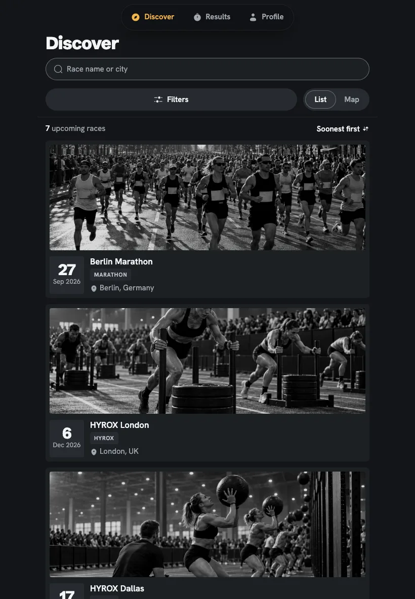
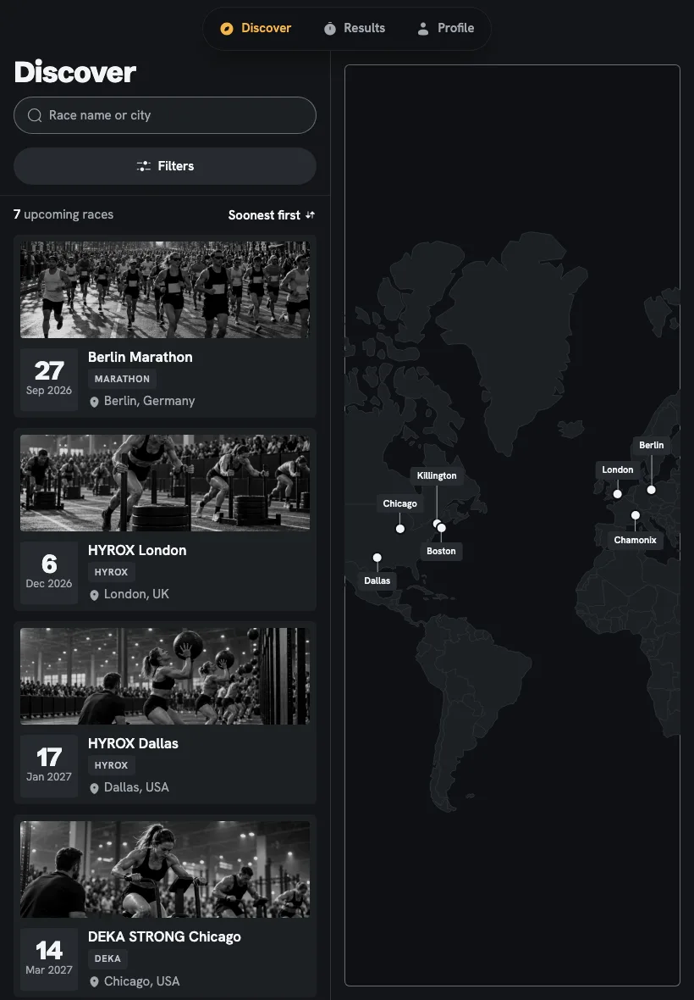
Race browse, a race chosen · 820
After choosing the first card: its race takes the map’s place, “‹ Map” back; the card is Selected and ?race= is in the address.
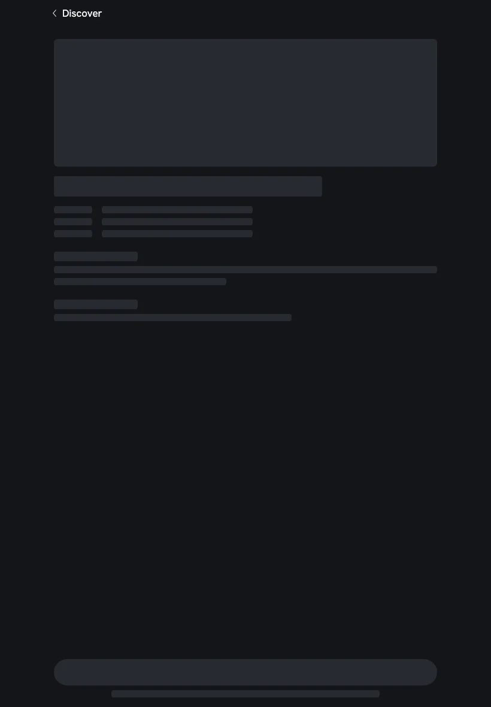
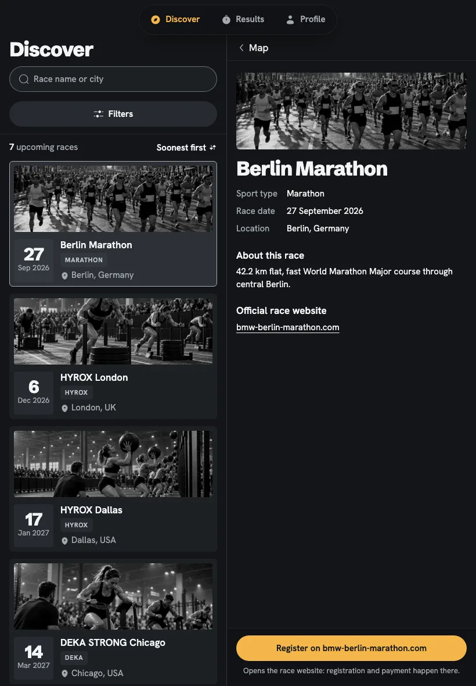
Race browse, nothing chosen · 1440
After: list, detail and map, beside the sidebar; with nothing chosen the detail pane says “No race selected”.

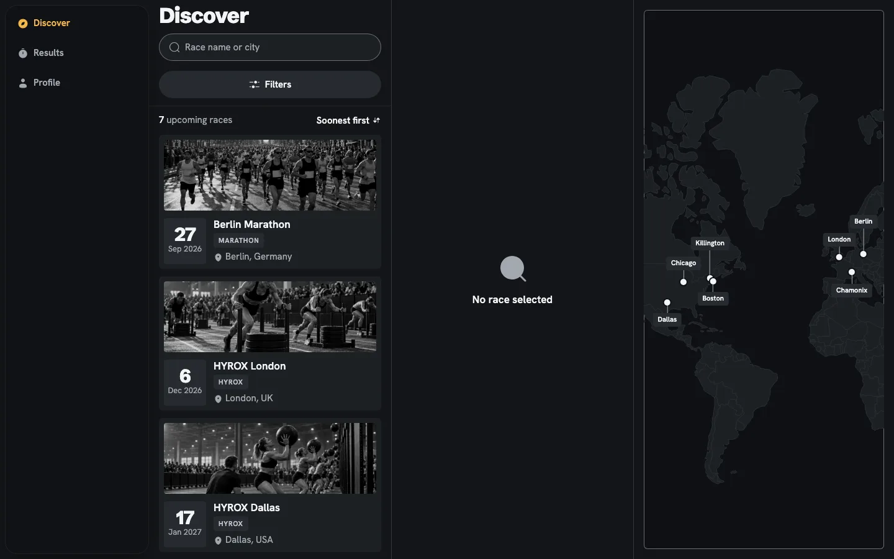
Race browse, ?race=utmb · 1440
A choice linked: ?race=utmb opens with UTMB in the detail pane, its card and its pin marked.

Results list, nothing chosen · 820
After: the list and “No result selected” beside it (microcopy row 595).
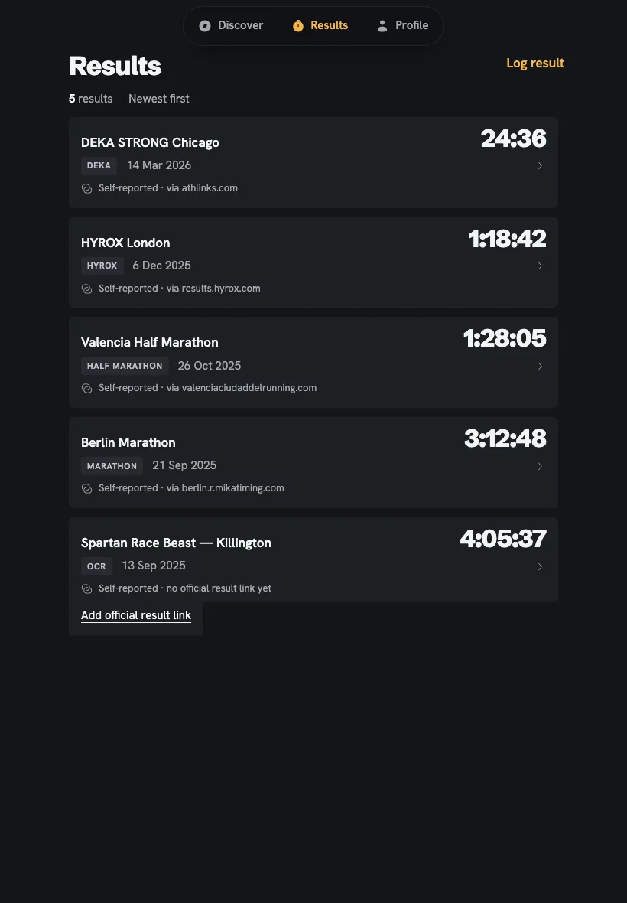
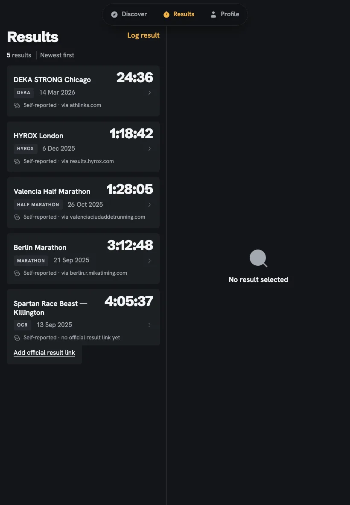
Results list, ?result=hyrox-london-2025 · 1440
After: the chosen result in the pane, its row Selected; its column stops at 672 in the wide pane.

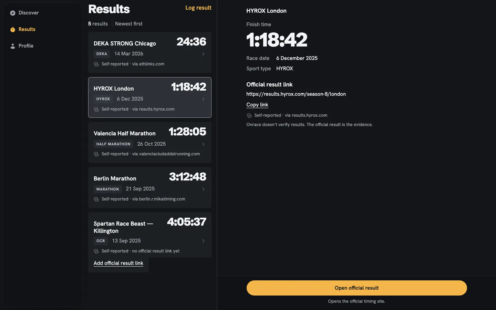
Race browse, loading · 1440
The list pane shows its skeleton; the detail pane keeps “No race selected”.
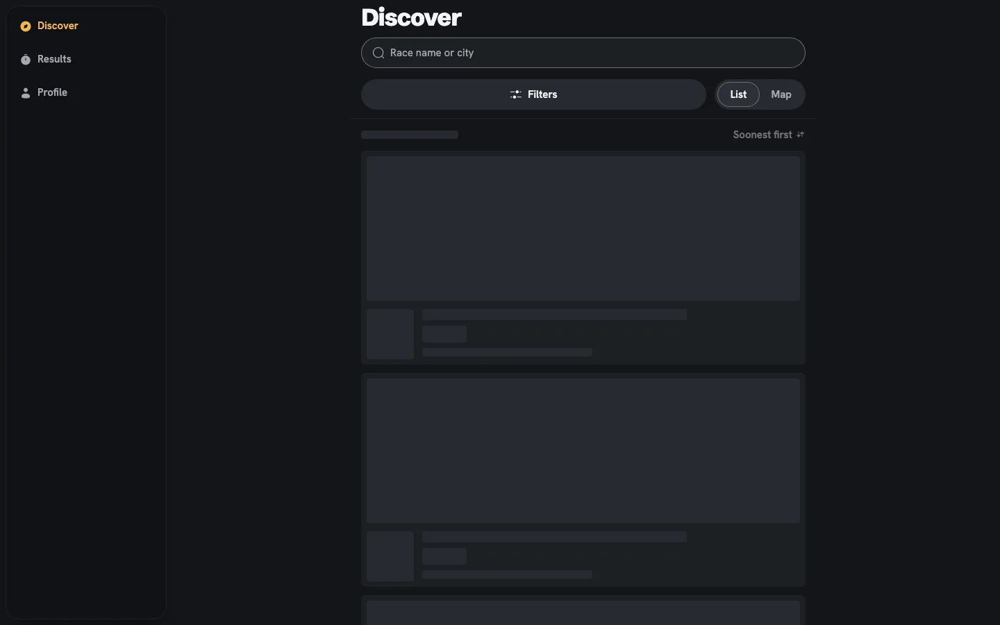
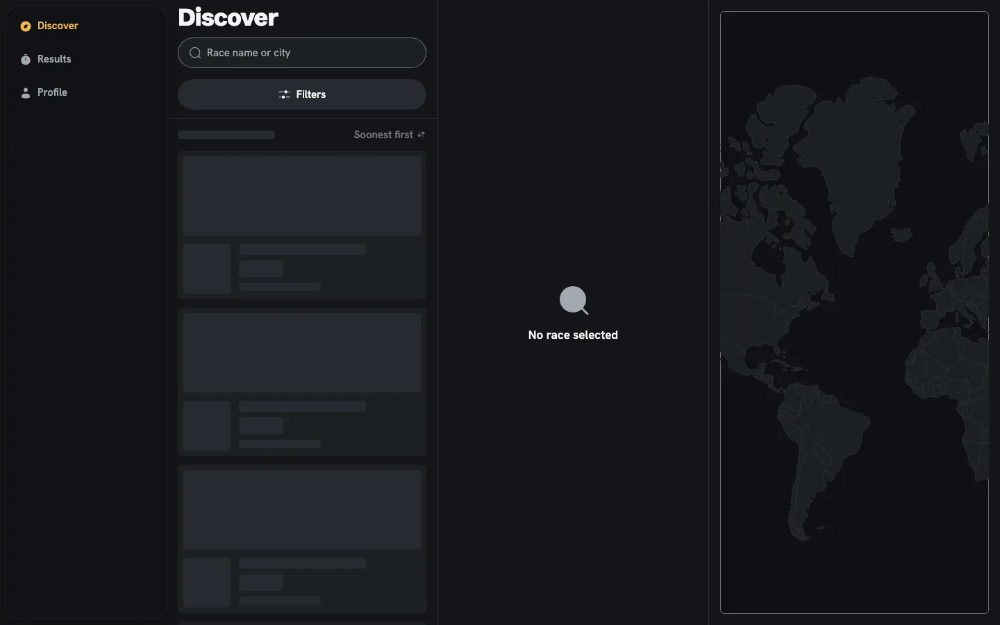
Race browse, empty · 820
The list pane says nothing matches; the map beside it stays a map, without a second message.
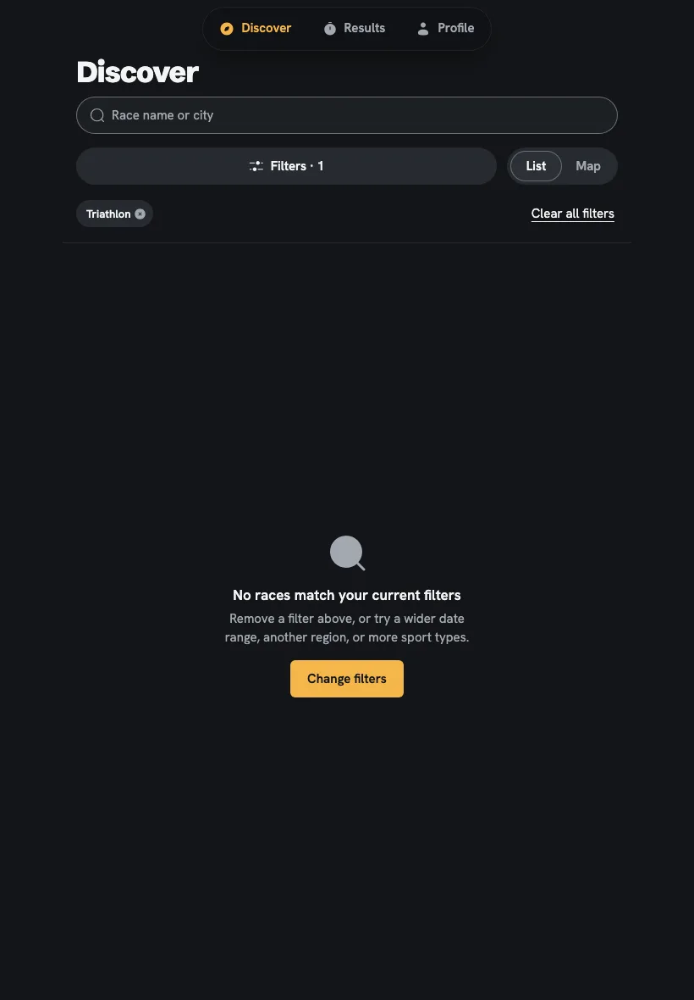
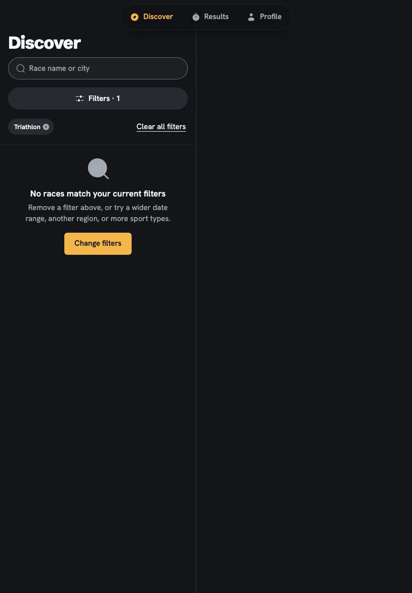
Results list, error · 1440
The list pane carries the error; the detail pane keeps “No result selected”.
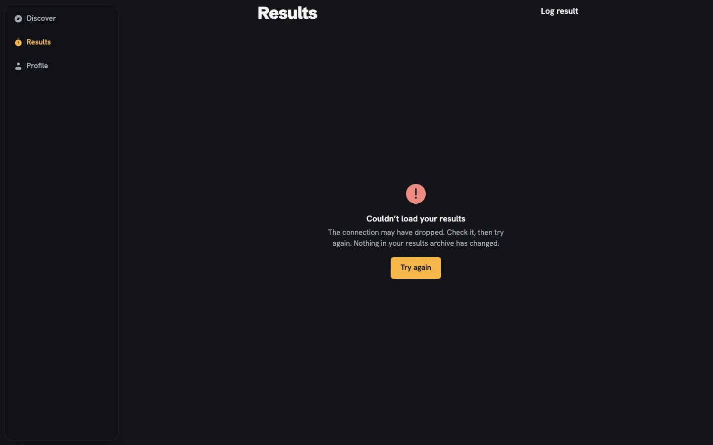
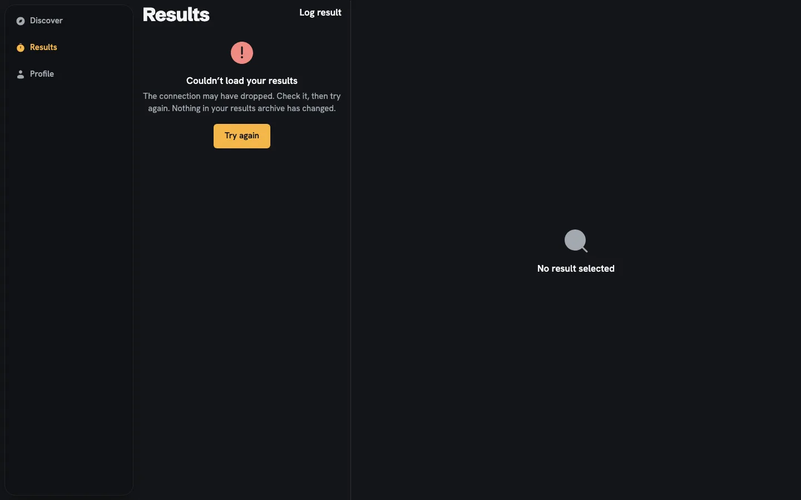
Results list, a detail that failed · 1440
A detail that fails to load (?fail=1, the reviewer switch): Result detail’s own error inside the pane; Try again retries there.

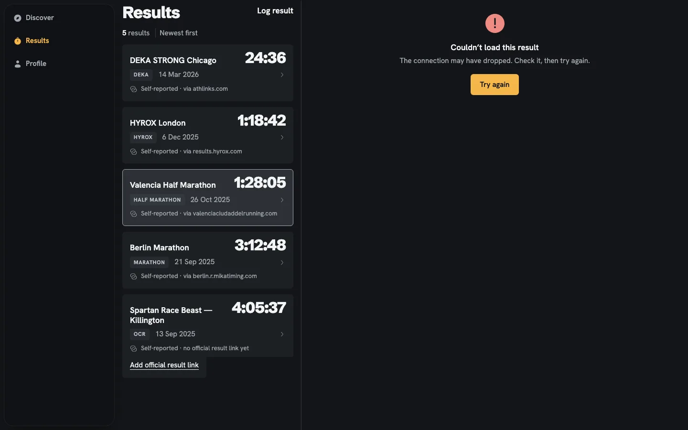
Race browse, phone · 390
The phone: unchanged. A card still opens Race detail, its own screen.


Race browse, 320 with 200% text · 320, 200% text
A phone with ?race= in the address: unchanged; the choice only matters where there is a pane.
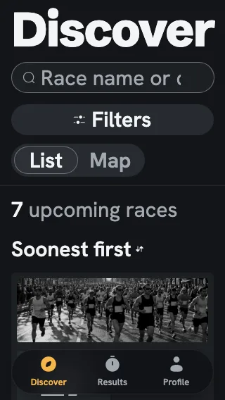